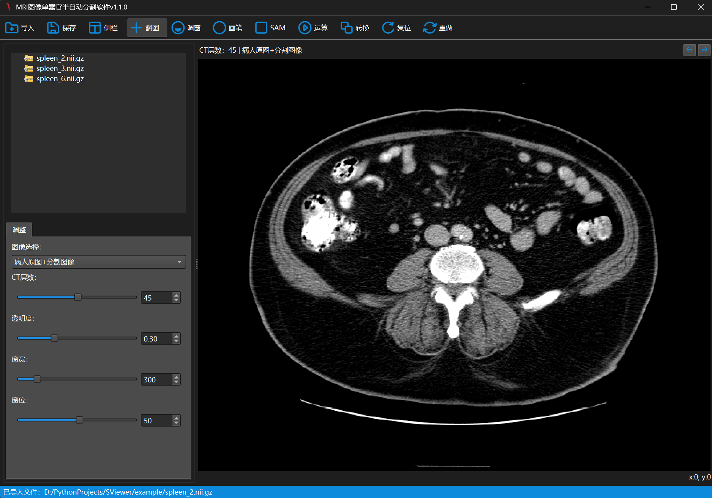

基于 Segment Anything Model 2 的新一代医学图像交互式标注平台

SViewer 是专为处理 nii.gz 格式医学图像设计的科研利器。通过集成 SAM 2，我们将 AI 的自动化与专家的临床经验相结合。无论是窗宽窗位的精准调节，还是 3D 结构的细致标注，SViewer 都能为你提供丝滑的操作体验。
集成 SAM2 模型，只需点击即可完成复杂器官的勾画。
深度支持医疗标准，提供专业的 CT/MRI 调窗功能。
基于 PySide6 构建，现代、流畅且易于扩展。
如果你想参与开发，可以通过以下命令快速搭建环境：